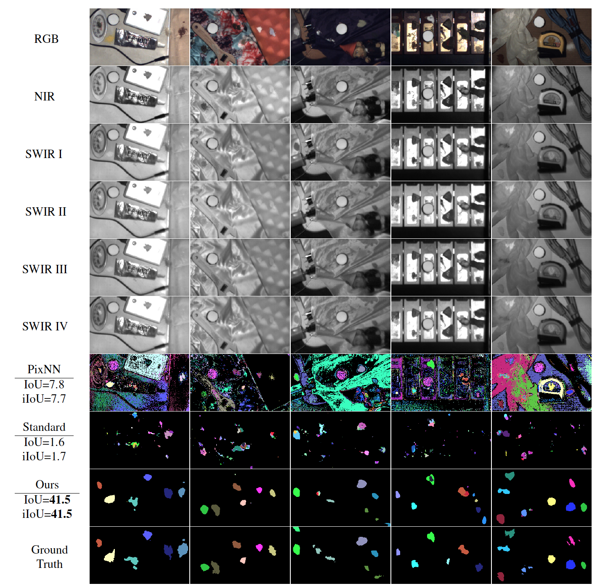

Multi-Spectral Imaging 数据采集前期调研
Equipment
FLIR Blackfly S RGB Camera
-
Spectral Range:
- Blue: 460 nm
- Green: 530 nm
- Red: 625 nm
-
Resolution: 720 × 540
-
FPS: 522
-
Dimensions [W x H x L]: 29 mm × 29 mm × 30 mm
-
Official Link: Link
XIMEA MQ022HG-IM-SM5X5-NIR Multispectral Camera
- Spectral Range: 665~975nm
- Resolution:
- Original: 2048 × 1088
- Spatial: 409 × 217
- FPS: up to 170 cubes/sec
- Sensor size: 2/3"
- Dimensions WxHxD: 26 x 26 x 31 mm
- Pixel size: 5.5 µm
- Python multispectral processing lib: Link
- Camera control official python lib: Link
- Official brief specification: Link
- Official Page: Link
| Full Specifications: | |
|---|---|
| Part Number | MQ022HG-IM-SM5X5-NIR |
| Resolution | Original: 2048 × 1088 Spatial: 409 × 217 |
| Frame rates | up to 170 cubes/sec |
| Sensor type | CMOS, Hyperspectral filters added at wafer-level |
| Sensor model | IMEC SNm5x5 |
| Sensor size | 2/3" |
| Sensor active area | 25 Bands |
| Readout Method | Snapshot Mosaic |
| Pixel size | 5.5 µm |
| ADC -Bits per pixel | 8, 10 bit RAW pixel data |
| Data interface | USB 3.1 Gen1 or PCI Express (xiX camera model) |
| Data I/O | GPIO IN, OUT |
| Power consumption | 1.6 Watt |
| Lens mount | C or CS Mount |
| Weight | 32 grams |
| Dimensions WxHxD | 26 x 26 x 31 mm |
| Operating temperature | 50 °C |
| Spectral range | 665-975 nm |
| Customs tariff code | 8525.80 30 (EU) / 8525.80 40 (USA) |
| ECCN | EAR99 |
Seek Compact Pro Thermal Camera
- Seek Compact Pro: 7500~14000 nm
- Resolution: 320 x 240
- Field of view: 32°
- Frame rate: < 9 Hz
- Focusable lens
- Platform: Android or iOS (Linux 3rd-party binary library)
- Specification Sheet: Link
Introduction
Full spectrum:
Different Infrared:
| Division name | Abbreviation | Wavelength | Frequency | Photon energy | Temperature[i] | Characteristics |
|---|---|---|---|---|---|---|
| Near-infrared | NIR, IR-A DIN | 0.75–1.4 μm | 214–400 THz | 886–1653 meV | 3,864–2,070 K (3,591–1,797 °C) | Defined by water absorption,[clarification needed] and commonly used in fiber optic telecommunication because of low attenuation losses in the SiO2 glass (silica) medium. Image intensifiers are sensitive to this area of the spectrum; examples include night vision devices such as night vision goggles. Near-infrared spectroscopy is another common application. |
| Short-wavelength infrared | SWIR, IR-B DIN | 1.4–3 μm | 100–214 THz | 413–886 meV | 2,070–966 K (1,797–693 °C) | Water absorption increases significantly at 1450 nm. The 1530 to 1560 nm range is the dominant spectral region for long-distance telecommunications. |
| Mid-wavelength infrared | MWIR, IR-C DIN; MidIR.[15] Also called intermediate infrared (IIR) | 3–8 μm | 37–100 THz | 155–413 meV | 966–362 K (693–89 °C) | In guided missile technology the 3–5 μm portion of this band is the atmospheric window in which the homing heads of passive IR ‘heat seeking’ missiles are designed to work, homing on to the Infrared signature of the target aircraft, typically the jet engine exhaust plume. This region is also known as thermal infrared. |
| Long-wavelength infrared | LWIR, IR-C DIN | 8–15 μm | 20–37 THz | 83–155 meV | 362–193 K (89 – −80 °C) | The “thermal imaging” region, in which sensors can obtain a completely passive image of objects only slightly higher in temperature than room temperature - for example, the human body - based on thermal emissions only and requiring no illumination such as the sun, moon, or infrared illuminator. This region is also called the “thermal infrared”. |
| Far infrared | FIR | 15–1000 μm | 0.3–20 THz | 1.2–83 meV | 193–3 K (−80.15 – −270.15 °C) | (see also far-infrared laser and far infrared) |
Thermal
Dataset
-
KAIST Multispectral Pedestrian Detection Benchmark [2018] Paper
Contain day and night scenarios. Human with bounding box. RGB-Thermal pair.
The KAIST Multispectral Pedestrian Dataset consists of 95k color-thermal pairs (640x480, 20Hz) taken from a vehicle. All the pairs are manually annotated (person, people, cyclist) for the total of 103,128 dense annotations and 1,182 unique pedestrians.


Real-Multispectral
-
Hyperspectral Images Database [2017]
Visible Range MSI
NUS hyperspectral images database: 52 Outdoor Scene, 35 Indoor Scene, 33 Individual Fruit Scene, 11 Group Fruit Scene, 13 Real vs Fake Fruit Scene, 44 color Charts & Patches Scene.
It consists of various indoor and outdoor scenes taken with a SPECIM hyperspectral camera and multiple consumer cameras. For consumer cameras, camera-specific RAW format that is free of any manipulation, is available. For easier classification, this hyperspectral camera dataset has been categorized into the following categories:
Additionally, our spectral data can be visualized using the professional software by Scyllarus Matlab/C++ toolbox.
Relevant Code GitHub

-
Multispectral Dataset from west virginia university
- SWIR Biometrics Dataset: SWIR
- WVU Multispectral Face Database: Three types of camera are used: RGB, Multi(RGB+NIR), SWIR
- Multispectral Imaging (Iris) Database:
-
Multispectral Image Recognition
- Multi-spectral Object Detection
RGB, Near-infrared (NIR), Mid-wavelength infrared (MIR), and Far infrared (FIR) from the left. Objects are labeled and bounding box predicted.
- Multi-spectral Semantic Segmentation
RGB-Thermal dataset with semantic segmentation
-
Multispectral Imaging (MSI) datasets: Painting multispectral images. Not paired. Not ordinary objects.
-
CAVE Multispectral Image Database
Visible Range MSI: 400nm to 700nm
It only has 32 multispectral & RGB image pairs… Be careful to use it. Each image has 31 bands, and they are separated.
Camera Cooled CCD camera (Apogee Alta U260) Resolution 512 x 512 pixel Filter VariSpec liquid crystal tunable filter Illuminant CIE Standard Illuminant D65 Range of wevelength 400nm - 700nm Steps 10nm Number of band 31 band Focal length f/1.4 Focus Fixed (focused using 550nm image) Image format PNG (16bit) -
Bristol Hyperspectral Images Database [1995]
Visible Range MSI
The database consists of 29 scenes, each composed by 31 spectrally filtered images (256 x 256 x 256 grey levels). Each scene has been compressed (zipped) and can be downloaded separately by clicking on the corresponding picture. Please bear in mind that all individual images have a 32 bytes header. To download the whole database at once, just click here.
There is some code and miscellaneous files here (these need to be run in order to make use of the images as physical measurements). A more complete description on how the images were gathered and some issues on the camera’s technicalities can be found here.
-
Harvard Real-World Hyperspectral Images [2011]
Visible Range MSI: 420nm to 720nm
The camera uses an integrated liquid crystal tunable filter and is capable of acquiring a hyperspectral image by sequentially tuning the filter through a series of 31 narrow wavelength bands, each with approximately 10nm bandwidth and centered at steps of 10nm from 420nm to 720nm.
The captured dataset includes images of both indoor and outdoor scenes featuring a diversity of objects, materials and scale.
This is a database of 50 hyperspectral images of indoor and outdoor scenes under daylight illumination, and an additional 25 images under artificial and mixed illumination. The images were captured using a commercial hyperspectral camera (Nuance FX, CRI Inc) with an integrated liquid crystal tunable filter capable of acquiring a hyperspectral image by sequentially tuning the filter through a series of thirty-one narrow wavelength bands, each with approximately 10nm bandwidth and centered at steps of 10nm from 420nm to 720nm. The camera is equipped with an apo-chromatic lens and the images were captured with the smallest viable aperture setting, thus largely avoiding chromatic aberration. All the images are of static scenes, with labels to mask out regions with movement during exposure.
This database is available for non-commercial research use. The data is available as a series of MATLAB .mat files (one for each image) containing both the images data and masks. Since the size of the download is large (around 5.5 + 2.2 GB), we ask that you send an e-mail to the authors at ayanc[at]eecs[dot]harvard[dot]edu for the download link. If you use this data in an academic publication, kindly cite the following paper:
-
UAE multispectral image database
Visible Range MSI: 400nm to 700nm
Wavelength range from 400nm to 700nm at 10nm steps (31 samples). The image matrix for each object is 31xWIDTHxHEIGHT. The images have been captured in a VeriVide viewing booth with a black cloth background under CIE illuminant D75. Each image has been captured twice: once with a white tile and once without. The illuminant has been estimated from the white tile and the spectral data divided by this estimate, in order to arrive at reflectance measurements. The images below are displayed sRGB values rendered under a neutral daylight (D65).
-
Manchester hyperspectral images Datasets
Visible Range MSI: 400, 410, …, 720 nm
Multiple MSI datasets included:
-
BOB NIR+VIS Face Database [2013]
It consists of 725 subjects in total. There are [1-22] VIS and [5-50] NIR face images per subject. The eyes positions are also distributed with the images.


RGB+NIR Range MSI: Images were collected at 1392×1300 spatial resolution over 519 spectral bands (400-1,000nm at roughly 1.25nm increments)
The database images were acquired using a Specim PS Kappa DX4 hyperspectral camera and a rotary stage for spatial scanning. At this time it contains 201 images and will continue to grow progressively. For your convenience, .mat files are provided, downsampled to 31 spectral channels from 400nm to 700nm at 10nm increments.
-
University of Granada hyperspectral image database
RGB+NIR Range MSI: Most of the images have spatial resolution of 1000 × 900 pixels. The spectral range is from 400 nm to 1000 nm in 10 nm intervals, resulting in total 61 channels.

-
SWIRPowder: A 400-1700nm Multispectral Dataset with 100 Powders on Complex Backgrounds
SWIR(Multi)+RGB+NIR

-
TokyoTech 31-band Hyperspectral Image Dataset [2015]
Visible Range MSI: 420nm to 720nm
Colorful objects with rich textures 30 scenes from 420nm to 720nm at 10nm intervals

Reference
Electromagnetic Wave Classification
γ = 伽马射线
X射线：
HX = 硬X射线
SX = 软X射线
紫外线：
EUV = 极端紫外线
NUV = 近紫外线
红外线：
NIR = 近红外线
MIR =中红外线
FIR = 远红外线
Typically we define near infrared (NIR) from 780 nm to 1400 nm and shortwave infrared (SWIR) from 1400 nm to 3000 nm.
微波：
EHF = 极高频
SHF = 超高频
UHF = 特高频
无线电波：
VHF = 甚高频
HF = 高频
MF = 中频
LF = 低频
VLF = 甚低频
ULF = 特低频
ELF = 极低频